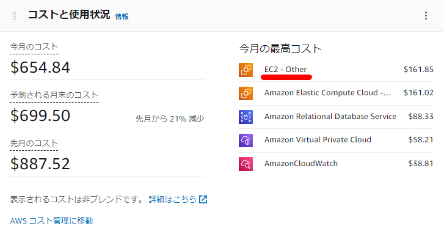
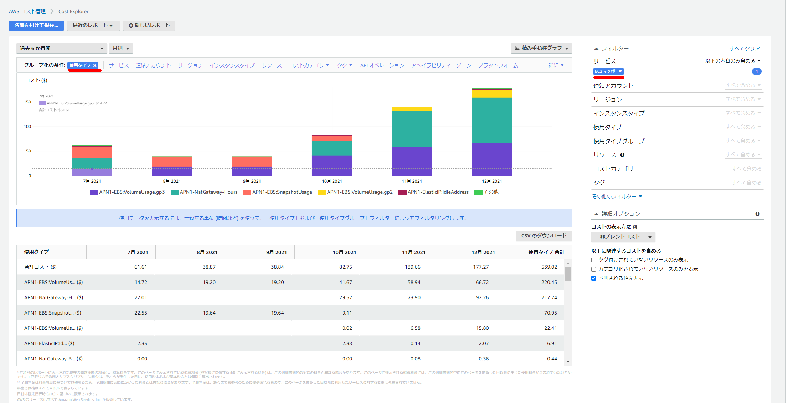

AWS料金の「EC2 - Other」の料金をAWS CLIから確認する
やりたいこと
AWSのコストで「EC2-Other」が高い場合があり、この内訳をAWS CLIベースでサクッと確認したい。

GUIベースでは？
「EC2-Other」の中で具体的に何に費用が掛かっているかについてはCost Explolerのフィルターでサービスとグループ化の条件で使用タイプを選択することで内訳を確認が出来る

AWS CLIで実現する
これをCLIで実現する際には下記のコマンドを実行する。各オプションの詳細はリファレンスを要確認。
フィルター用のファイルを作成する。今回はKeyとValuesにそれぞれ下記を設定
cat << EOF > ce_filter.json
{
"Dimensions": {
"Key": "SERVICE",
"Values": ["EC2 - Other"]
}
}
EOF
--filterに上記で作成したファイルを指定しつつ、 --group-byで使用タイプを設定する。後は高コストな使用タイプ順に出力する。ダブルクォーテーションで囲まれててうまくソート出来ていなかったので、awkでごにょごにょしている。
aws ce get-cost-and-usage \
--time-period Start=2022-01-01,End=2022-01-30 \
--granularity MONTHLY \
--metrics UnblendedCost \
--group-by Type=DIMENSION,Key=USAGE_TYPE \
--filter file://ce_filter.json | jq -r '.ResultsByTime[].Groups[] | [(.Keys[]), .Metrics.UnblendedCost.Amount] | @csv' | awk -F\" '{print $2,$3,$4}' | sort -r -k 2 | head -n 10
実行結果
[ec2-user@bastin ~]$ aws ce get-cost-and-usage \
> --time-period Start=2022-01-01,End=2022-01-30 \
> --granularity MONTHLY \
> --metrics UnblendedCost \
> --group-by Type=DIMENSION,Key=USAGE_TYPE \
> --filter file://ce_filter.json | jq -r '.ResultsByTime[].Groups[] | [(.Keys[]), .Metrics.UnblendedCost.Amount] | @csv' | awk -F\" '{print $2,$3,$4}' | sort -r -k 2 | head -n 10
APN1-NatGateway-Hours , 85.932
APN1-EBS:VolumeUsage.gp3 , 61.2496773819
APN1-EBS:VolumeUsage.gp2 , 14.5525795272
APN1-NatGateway-Bytes , 0.1139805019
APN1-USE1-AWS-Out-Bytes , 0.000031066
APN1-USW2-AWS-Out-Bytes , 0.0000110895
APN1-APS1-AWS-Out-Bytes , 0.0000010102
APN1-USW1-AWS-Out-Bytes , 0.0000002506
APN1-APS3-AWS-Out-Bytes , 0.0000001677
APN1-APN2-AWS-Out-Bytes , 0.0000001634
[ec2-user@bastin ~]$
関連しているかもしれない記事
- お名前.comで取得したドメインを使用してACMでSSL証明書を発行する
- Spark on Docker on EC2環境を構築する
- Redshift Spectrumの同時実行性能パフォーマンス
- Redshiftから特定区切り文字でファイル出力する
- Apache Bench（abコマンド）で簡易的なアクセスをCloudFrontに実行